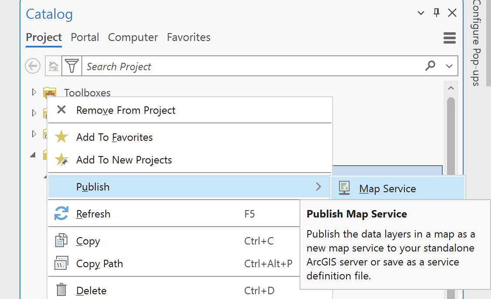
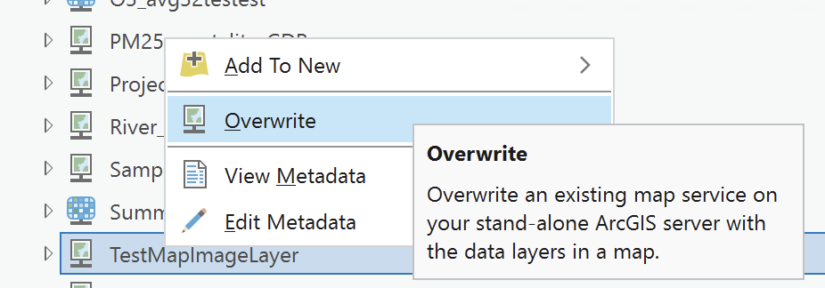

Publishing Services from ArcGIS Pro to ArcGIS Server Standalone
This guide walks you through the steps to publish a map service from ArcGIS Pro to an ArcGIS Server standalone. Follow each step to successfully share your GIS data as a web service.
Introduction
Objective
Learn how to publish a map service from ArcGIS Pro to an ArcGIS Server standalone.
Prerequisites
- ArcGIS Pro installed and licensed.
- Access to an ArcGIS Server standalone.
- Proper permissions to publish services on the server.
Connect ArcGIS Pro to the Server
Connect ArcGIS Pro to ArcGIS Server
- Open ArcGIS Pro.
- Go to the
Catalogpane. - Right-click on
Serversand selectAdd ArcGIS Server.
- Provide the server's URL and credentials. You can check the full list of available servers in the EEA Publishing guidelines document.

Verify the Connection
Ensure that the server connection appears in the Servers section of the catalog.
Prepare Data in ArcGIS Pro
Open Project and Add Data
- Open an existing project or create a new one in ArcGIS Pro.
- Add the layers (e.g., shapefiles, feature classes) you wish to publish to your map.
Configure Layer Properties
Review layer properties, such as symbology and projection, which will impact how the service is visualized.
Publish a New Service
Locate the Server and Publish the Service
- In the
Catalogpane, go to theServerssection to view the list of available servers. - Right-click on the server where you want to publish the service and select
Publish. - Select the type of service you want to publish depending on your needs and your data.

Select the Map to Publish
- A new window will open, listing all available maps in your ArcGIS Pro project.
- Select the map you wish to publish as a service.
Configure Service Details & Capabilities
- Name & Folder: Enter a name for your service and select the folder on the server.
- Capabilities: Select capabilities (e.g.,
WMS,Feature Access) required for your service.
Overwrite an Existing Service
Locate and Overwrite the Service
- If you need to republish or update an existing service, locate the service in the
Serverssection of theCatalog. - Right-click on the service and choose
Overwrite. - Follow the prompts to update the service with new data or settings.

Analyze and Optimize
Analyze Before Publishing
- Click
Analyzeto check for any warnings or errors before publishing. - Address any reported issues (e.g., missing data, incorrect projections).
Optimize for Performance
Consider optimizing data and symbology to enhance service performance.
Publish the Service
Publish the Web Layer
- After addressing analysis issues, click
Publish. - Wait for the publishing process to complete, which may take some time depending on data size.
Confirm Successful Publishing
Once published, ArcGIS Pro will display a confirmation message with a link to the service.
Test the Published Service
Access the Published Service
- Open a web browser and go to the service's URL.
- Ensure the map or data layers are accessible and display correctly.
Test Service Functionalities
If you enabled additional capabilities (e.g., WMS), test their functionalities.
Conclusion & Best Practices
Service Maintenance
Regularly monitor and maintain your service to ensure data is up-to-date and performance is optimal.
Best Practices
- Optimize data before publishing for efficient service performance.
- Use logical server folders to organize and manage services effectively.